YOLOv8n 单类（head）检测:从 COCO 初始化 → general 集自训练起始模型 → classroom 微调， 在固定 150 张 classroom test 上用同一套 IoU/AP 实现对比。
已完成六个任务 · GPU: RTX 4060 Laptop (CUDA 13.2)Pipeline: 标注检查 → 基准评测 → 微调 → 对照实验 → 前后对比 → 摄像头演示。
src.predict / src.evaluate 两步即可替换基准列。| Image group | 训练 | 验证 | 测试 | 总计 |
|---|---|---|---|---|
| Classroom | 700 | 150 | 150 | 1,000 |
| General scenes | 240 | 60 | 0 | 300 |
| 合计 | 940 | 210 | 150 | 1,300 |
inspection/。初始化: COCO yolov8n.pt · 数据: general 240/60 · epochs 100 · imgsz 640 · batch 16 · lr0 0.001 · seed 0 · GPU
| general val 最终结果 | |
|---|---|
| 仅 general 集 | |
| P 0.903 / R 0.791 | |
| mAP50 0.885 | |
| mAP50-95 0.485 |
150 张测试图, 4,724 个 GT。conf 0.25 / IoU 0.50; AP 保留低分预测并用 101 点插值扫阈值。
| 指标 | Before fine tuning |
|---|---|
| Precision@0.25 | 0.7659 |
| Recall@0.25 | 0.7771 |
| AP50 | 0.8296 |
| AP50-95 | 0.3518 |
| 速度/图 | 18.8 ms |
误差最大的 5 张测试图(绿=GT, 红=预测):
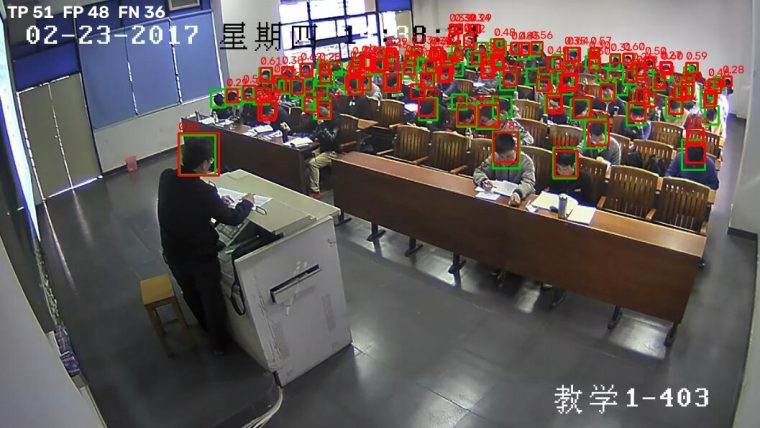
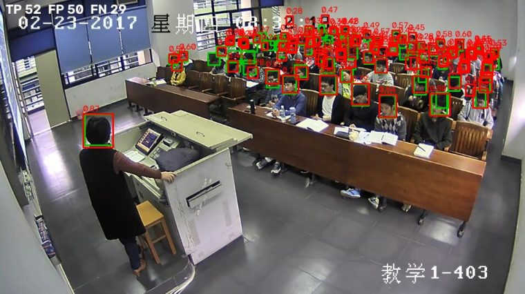
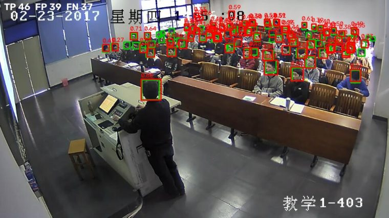
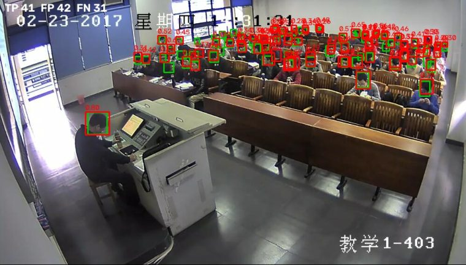
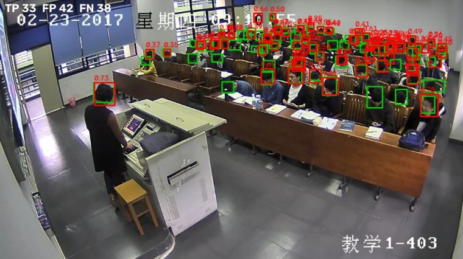
同一起始 checkpoint、同 seed/imgsz/batch/epochs;唯一变化 = 训练数据(classroom vs classroom+general)。
| 训练数据 | 训练图数 | P@0.25 | R@0.25 | AP50 | AP50-95 | 速度/图 |
|---|---|---|---|---|---|---|
| classroom 微调 | 700 | 0.8717 | 0.9251 | 0.9494 | 0.4740 | 13.0 ms |
| mixed 对照实验 | 700+240 | 0.8461 | 0.9308 | 0.9499 | 0.4732 | 13.8 ms |
| Metric | Before (starting) | After (finetune) | Mixed (experiment) |
|---|---|---|---|
| Precision @ conf 0.25 | 0.7659 | 0.8717 | 0.8461 |
| Recall @ conf 0.25 | 0.7771 | 0.9251 | 0.9308 |
| AP50 | 0.8296 | 0.9494 | 0.9499 |
| AP50-95 | 0.3518 | 0.4740 | 0.4732 |
| 时间/图 (ms) | 18.8 | 13.0 | 13.8 |
同一 5 张示例图 (左: 基准 / 右: 微调):
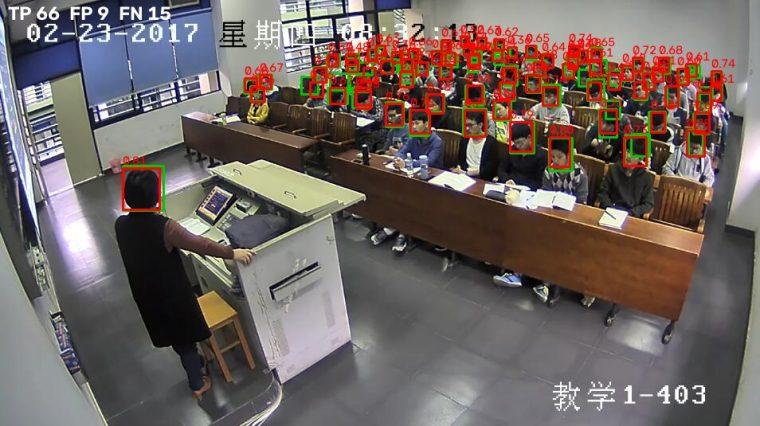
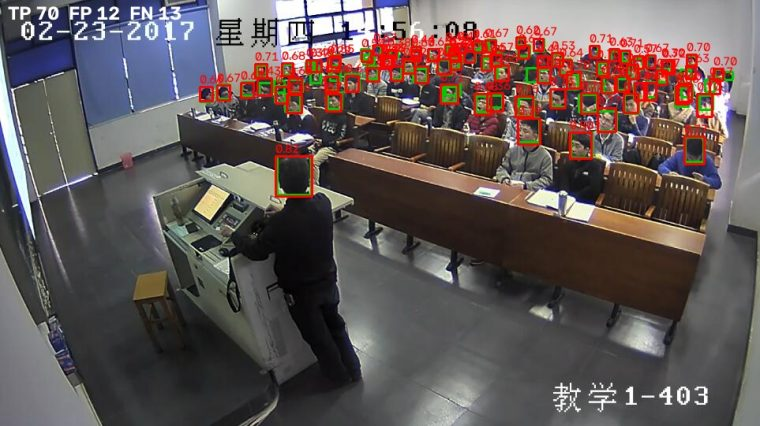
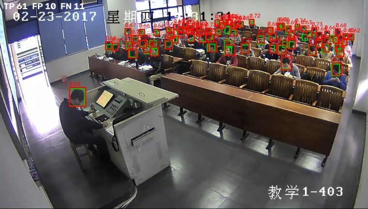
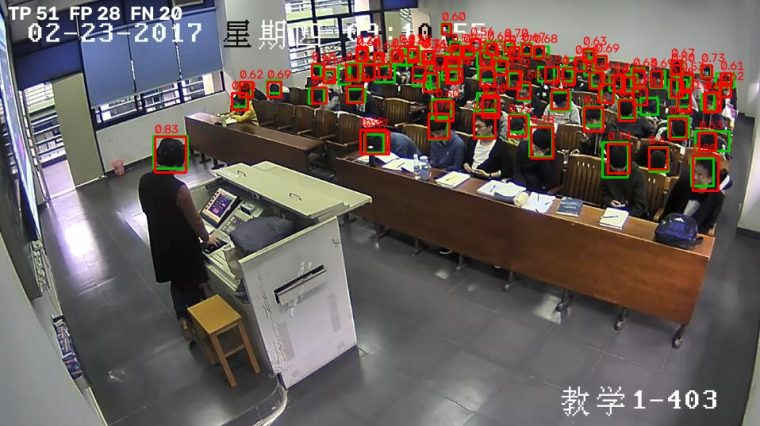
增删改拖拽/缩放框、缩放、标签开关、上一张/下一张、保存到 annotations_edited/(不覆盖原文件)、导出 YOLO zip。
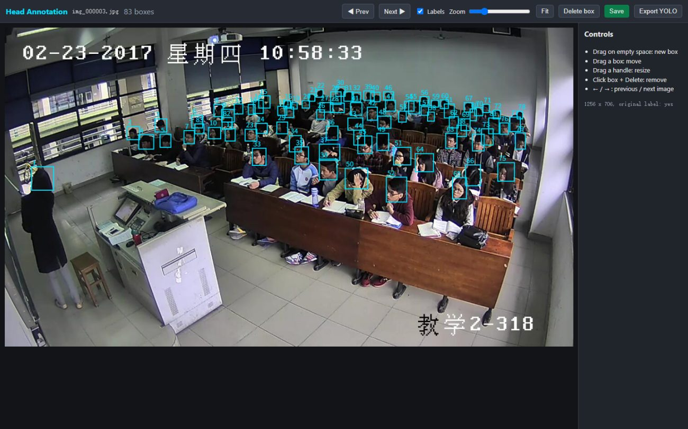
python -m annotator.app --images <dataset>/images/classroom/train \
--labels <dataset>/labels/classroom/train --format yolo
webcam.py: 实时框 + 置信度 + 帧率 + conf 滑杆。单帧推理示例(同模型管线):
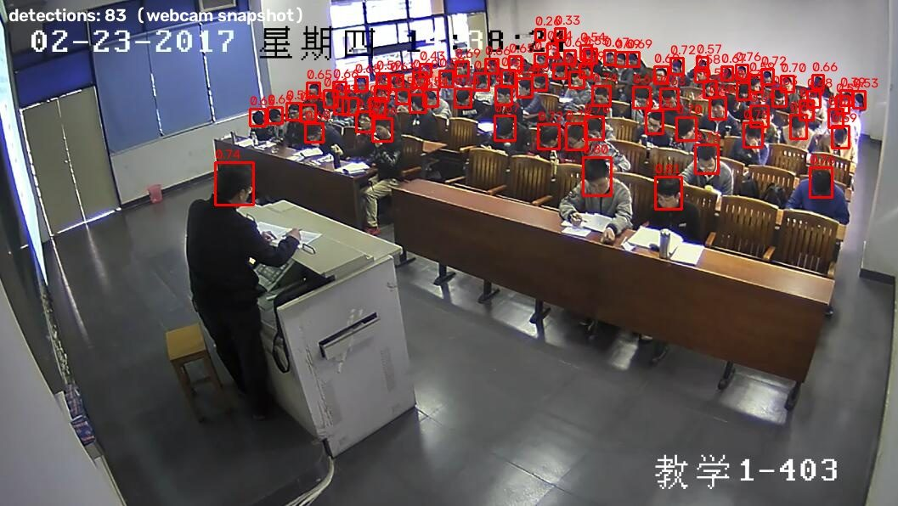
python -m src.webcam --weights runs/finetune/weights/best.pt --camera 0
实测说明: 本机摄像头取景为空场景(8 帧均无人物)时检测数为 0,符合预期; 摄像头近景与教室俯拍视角存在差异(域差异),需要人物入镜才能演示。
install.bat cu124 (或其他 CUDA tag) # 安装 CUDA 版 PyTorch + 依赖 python check_gpu.py # CUDA available: True python -m src.data_check ... # Task 2 自动检查 python scripts/train_starting.py # 起始检测器 (general, 本页替代版) python -m src.predict --weights runs/starting_general/weights/best.pt --images .../classroom/test --out runs/baseline/preds.json python -m src.evaluate --images ... --labels ... --preds runs/baseline/preds.json --out runs/baseline/metrics.json python -m src.visualize --images ... --labels ... --preds runs/baseline/preds.json --out runs/baseline/vis --worst 5 python -m src.train --weights runs/starting_general/weights/best.pt --data classroom --epochs 100 --name finetune python -m src.train --weights runs/starting_general/weights/best.pt --data mixed --epochs 100 --name finetune_mixed python -m src.compare ... # Task 5 对比表